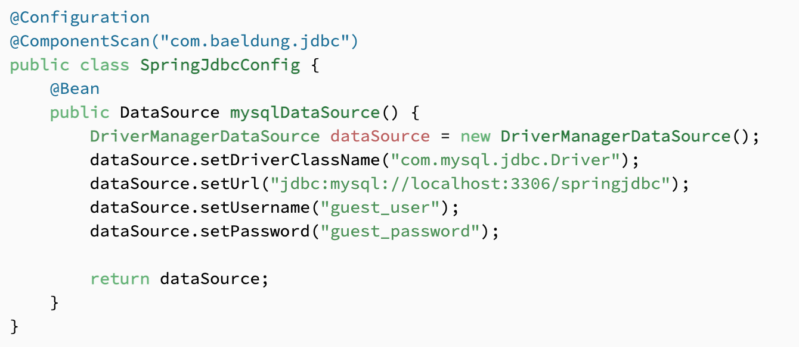
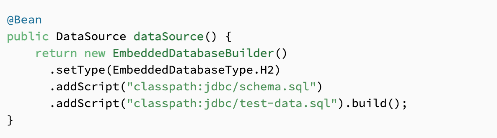
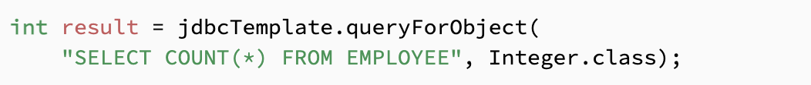
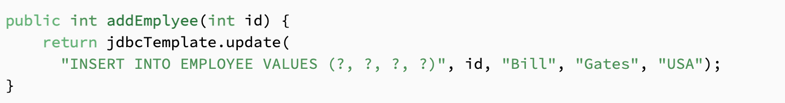
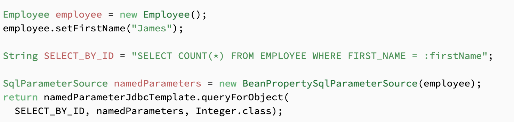
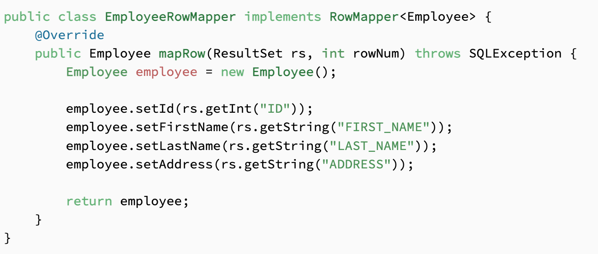
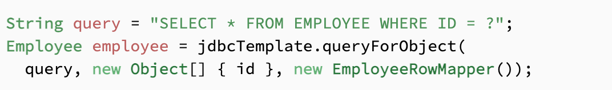
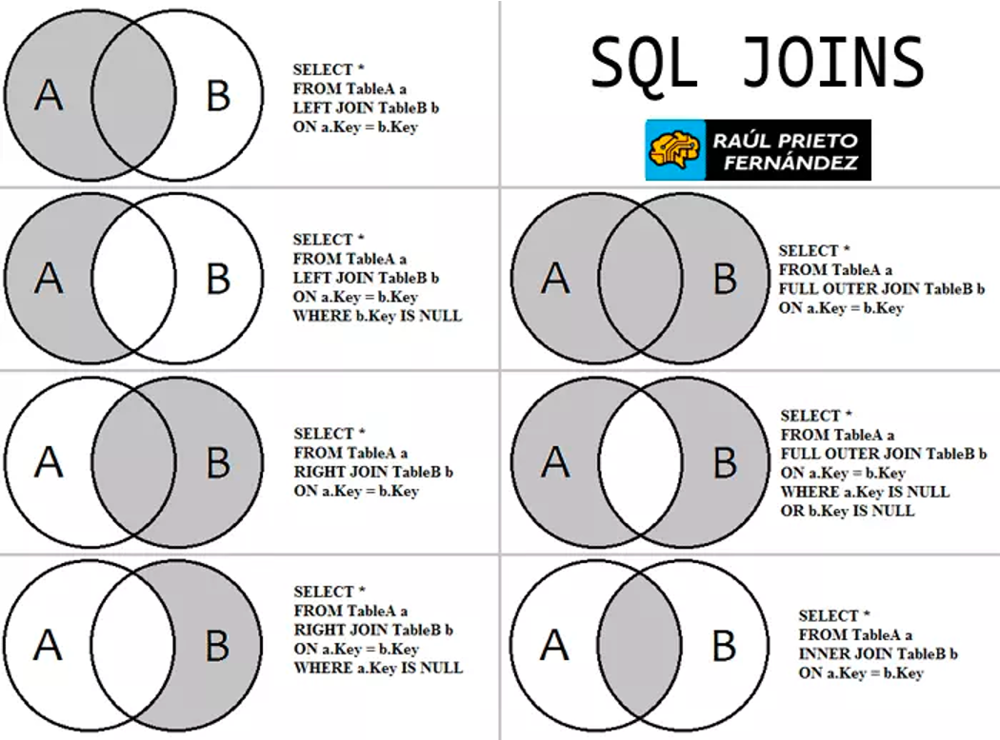

Programación de Aplicaciones Telemáticas
Tema 10: Acceso a base de datos relacionales (JDBC)
Agenda
Sessión 3
- JDBC Templates
- SQL Joins
Sessión 3
JDBC Templates
Introduccion
- Generalmente el uso y explotación de bases de datos SQL en Java lo realizamos a través de herramientas de mapeo ORM tales como Hibernate o Apache OpenJPA
- Spring Data JPA proporciona su propia capa de abstracción
- En algunos escenarios no es una buena opción o incluso es inviable el uso de Hibernate y similares
Escenarios
- Bases de datos no normalizadas ya existentes, cuya estructura no podemos modificar , y que resultan muy complejas de modelar con entidades
- Tenemos que utilizar directamente SQL para aprovechar las funcionalidades proporcionadas por la propia de base datos y/o optimizar al máximo el rendimiento
- Capas de persistencia que se basan en el uso intensivo de procedimientos almacenados
Principios
- nos permitirá precisamente centrarnos en el código que importa -el sql y los mapeos
- No tendremos que abrir conexiones, devolverlas, o gestionar manualmente las transacciones
Configuración
Configuración
Ejemplo: SELECT
Ejemplo: INSERT
Ejemplo: PARAMETROS
Ejemplo: MAPPING
 SQL Joins
Tipos
Tipos
- Inner Join. El Join de “toda la vida”. El join per defecto que se aplica cuando no indicamos otra cosa al hacer la consulta. Devuelve sólo aquellas filas donde haya un “match”, es decir, las filas donde el valor del campo de la tabla A que se utiliza para hacer el Join coincida con el valor del campo correspondiente en la tabla B. Ejemplo: devolver todos los productos para los que haya como mínimo un pedido en los últimos días (el inner join enlazará el campo producto en la tabla Pedido con la clave primaria de ese producto en la tabla Producto)
Tipos
- Left outer Join. Cuando quieres todas las filas para las que haya match pero también aquellas de la Tabla A que no hagan match. Siguiendo el ejemplo anterior, si quieres listar todos los productos con datos de sus pedidos pero mostrando también aquellos productos para lo que no tengas todavía un pedido, la solución sería hacer una Left Outer join entre Producto y Pedido.
Tipos
- Right outer Join. Exactamente lo mismo pero a la inversa, cuando quieres listar las filas de la tabla B aunque no estén relacionadas con ninguna fila de la tabla A. Es un operador un poco redundante ya que se podría cambiar simplemente el orden de las tablas en el Join y utilizar un left outer para conseguir el mismo efecto. No obstante, y como parte de Joins múltiples, es útil tener los dos para un mejor comprensión de la consulta
Tipos
- Full outer join. Es como la suma de las dos anteriores. Queremos tanto las filas de la A como las de B, tanto si hay match como si no (evidentemente cuando haya match la consulta devolverá todos los campos de A y B que hayamos indicado, cuando no, la consulta devolverá sólo los campos de A o B)